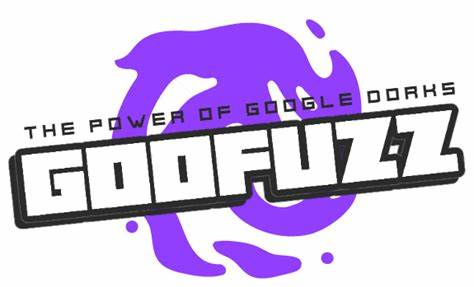

Goofuzz
Goofuzz é uma ferramenta de fuzzing para aplicações web, utilizada para descobrir diretórios, arquivos ocultos e pontos vulneráveis em servidores HTTP. Ela automatiza o envio de múltiplas requisições com diferentes parâmetros, auxiliando na identificação de falhas de segurança e recursos não documentados.
Principais Funcionalidades:
- Descoberta de diretórios e arquivos ocultos em aplicações web
- Suporte a wordlists personalizadas para fuzzing
- Capacidade de customizar cabeçalhos e métodos HTTP
- Relatórios detalhados dos resultados encontrados
- Interface de linha de comando simples e eficiente
Recomendado para:
Profissionais de segurança, pentesters e entusiastas que desejam mapear superfícies de ataque em aplicações web durante avaliações de segurança.
üîó Reposit√≥rio Oficial no GitHub